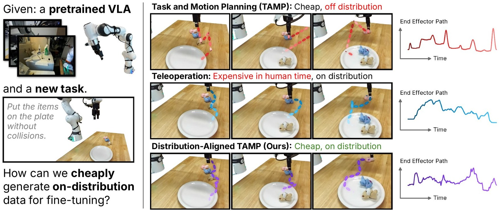
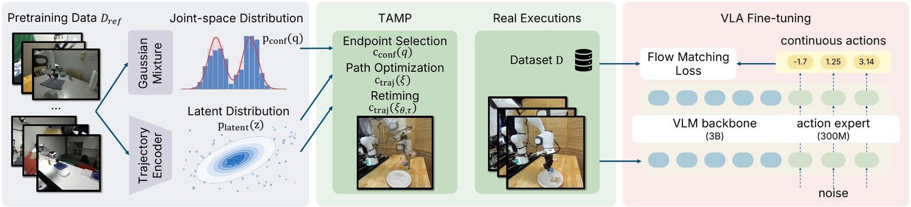
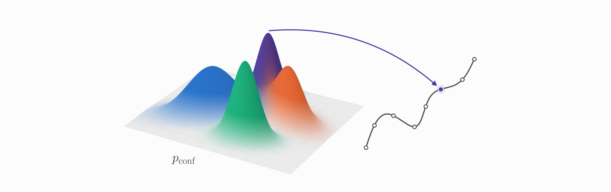
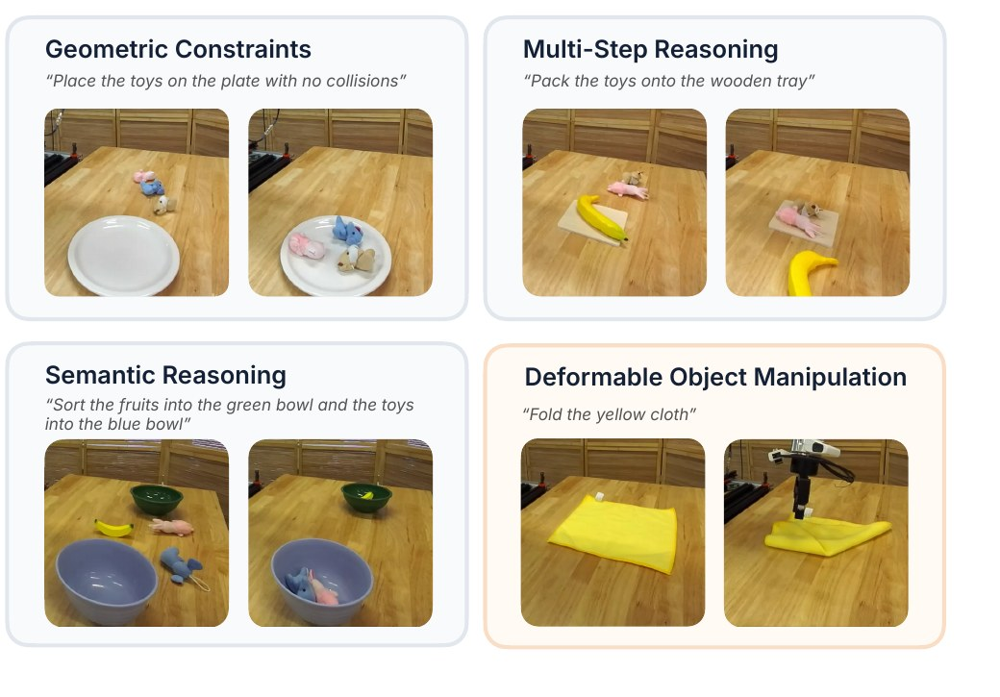
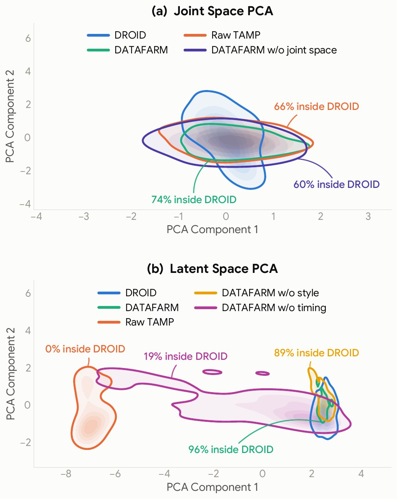

Collecting high-quality robot data remains a fundamental challenge for training robot foundation models. Task and motion planning (TAMP) offers a scalable way to generate demonstrations, but our experiments show that raw TAMP trajectories provide surprisingly little benefit when used to fine-tune pretrained vision-language-action (VLA) models, despite successfully solving the target tasks. We hypothesize that this failure arises from a behavioral distribution mismatch between planner-generated trajectories and the data used to pretrain the VLA.
To address this mismatch, we introduce DATAFARM: Distribution-Aligned Task And motion planning for Fine-tuning A Robot foundation Model, an approach that incorporates the pretraining distribution directly into TAMP trajectory generation. DATAFARM aligns generated trajectories with the pretraining data in robot joint configurations, motion style, and temporal execution profiles. We evaluate DATAFARM on three tabletop manipulation tasks that TAMP can perform and a cloth-folding task beyond the capability of TAMP. DATAFARM achieves an average success rate of 56.7%, substantially outperforming raw TAMP (8.3%) while approaching human teleoperation (61.7%). On Deformable Object Manipulation, which is outside the fine-tuning distribution, the fine-tuned model retains 85% success, compared with 90% for the pretrained model. These results show that aligning planner-generated demonstrations with the pretraining distribution can make TAMP an effective source of data for VLA fine-tuning.
DATAFARM learns models of reference behavior to guide the planner's selection of configurations, paths, and execution times. These models are learned before planning and subsequently held fixed.

For each candidate end-effector pose, we rank the IK solutions using the configuration cost. This ranking favors arm postures with higher reference density among the candidates reaching that pose.
With endpoints selected, we augment the planner's objective with the trajectory cost. The added cost can therefore change how the arm moves between the endpoints, including the velocities and higher derivatives induced by the waypoint sequence. We optimize this objective using waypoint gradients, back-propagating through the frozen encoder and the kinematic preprocessing. The planner retains its original constraint penalties and checks the resulting motion for feasibility before accepting it.
We next optimize how quickly the robot traverses each path produced by the preceding optimization, keeping the path's geometry fixed. We parameterize the time scaling by dividing the path into 64 equal arc-length intervals, each assigned a fraction of the total duration. A boundary-speed penalty targets the mean speed measured immediately before and after gripper events in the reference demonstrations. Candidate motions are checked against the robot's motion limits before acceptance.

Endpoint selection favors arm postures with higher reference density among the candidates reaching each pose. Path optimization can change how the arm moves between the endpoints, including the velocities and higher derivatives induced by the waypoint sequence. Retiming then changes how quickly the robot traverses each path, keeping the path's geometry fixed.
For every target task and fine-tuning approach, we train a separate checkpoint from 20 successful demonstrations using the same fine-tuning procedure, and evaluate each checkpoint for 20 trials on fresh initial scenes.

DATAFARM aligns planner-generated trajectories with DROID in robot joint configurations, motion style, and execution timing. The TiPToP demonstrations used for fine-tuning are successful planner executions.
DATAFARM plans and executes the demonstration motions without human control; human assistance is permitted for scene setup and resets. Videos are sped up by the factor shown in each corner.
The TiPToP demonstrations used for fine-tuning are successful planner executions, so their limited downstream benefit cannot be attributed to a failure to solve the tasks. A task-valid trajectory is not necessarily effective fine-tuning data for this pretrained policy.
| Approach | Geometric Constraints | Multi-Step Reasoning | Semantic Reasoning | |||||||||
|---|---|---|---|---|---|---|---|---|---|---|---|---|
| Succ. | Prog. | OOD Succ. | OOD Prog. | Succ. | Prog. | OOD Succ. | OOD Prog. | Succ. | Prog. | OOD Succ. | OOD Prog. | |
| π0.5-DROID | 0% | 18% | 90% | 95% | 0% | 13% | 90% | 95% | 5% | 50% | 90% | 95% |
| Raw TAMP | 5% | 35% | 85% | 93% | 5% | 37% | 70% | 85% | 15% | 58% | 75% | 88% |
| DATAFARM w/o style | 10% | 39% | – | – | 0% | 31% | – | – | 35% | 54% | – | – |
| DATAFARM w/o timing | 0% | 19% | – | – | 0% | 18% | – | – | 0% | 29% | – | – |
| DATAFARM w/o joint space | 35% | 73% | – | – | 15% | 53% | – | – | 20% | 66% | – | – |
| DATAFARM | 65% | 84% | 80% | 90% | 35% | 81% | 85% | 88% | 70% | 89% | 90% | 93% |
| Human teleop (oracle) | 50% | 93% | 95% | 98% | 45% | 90% | 95% | 98% | 90% | 98% | 95% | 98% |
Success rate (Succ.) and task progress (Prog.) for task-specific fine-tuning. Each task group reports performance on the named target task and retention on Deformable Object Manipulation; demonstrations of this task are excluded from fine-tuning. Human teleoperation is an oracle only in its access to human target-task demonstrations and is not assumed to upper-bound the autonomous methods.
We evaluate each resulting task-specific policy on its corresponding target task.
Although none of the fine-tuning datasets include this task, the policies retain 85% average success. Videos are sped up by the factor shown in each corner.
We remove one alignment component at a time while retaining the other two. Removing joint-space alignment reduces average target-task success from 56.7% to 23.3%, and removing style alignment reduces it to 15.0%. Removing timing alignment has the largest effect: the policy fails every trial across all three target tasks.
Fine-tuning on DATAFARM demonstrations largely preserves the pretrained policy's performance on Deformable Object Manipulation, a task that TiPToP cannot perform. The unmodified π0.5-DROID succeeds on 90% of trials. After fine-tuning on Geometric Constraints, Multi-Step Reasoning, or Semantic Reasoning, the policy succeeds on 80%, 85%, and 90% of Deformable Object Manipulation trials, respectively.
Policy performance on Geometric Constraints with increasing numbers of DATAFARM demonstrations. The 0-demonstration column reports π0.5-DROID without fine-tuning. Success reaches 75% with 40 demonstrations and remains at 75% with 60. With 80 demonstrations, the policy reaches 85% success and 97% progress.
Density contours show samples projected onto the first two principal components of (a) robot joint configurations and (b) trajectory embeddings. The outer line is the displayed density contour for each source.

DATAFARM increases overlap with DROID in both the joint-space and trajectory-latent projections.
In joint space, 74% of DATAFARM samples lie inside the displayed DROID contour, compared with 66% for raw TAMP and 60% without joint-space alignment.
In trajectory latent space, 96% of DATAFARM samples lie inside the DROID contour, compared with 0% for raw TAMP, 89% without style alignment, and 19% without timing alignment.
The style ablation retains 89% overlap but reaches only 15.0% success, so high overlap in this projection alone does not ensure task success. Each component improves policy performance when added to the other two.
Each annotation reports the fraction of that source's projected samples inside the outer DROID contour. These projections diagnose overlap in the displayed representations; they do not measure equality with the full pretraining distribution.
@article{datafarm2026,
title = {DATAFARM: Distribution-Aligned Task and Motion Planning
for Fine-Tuning Vision-Language-Action Models},
author = {Anonymous Authors},
year = {2026},
note = {Under review}
}